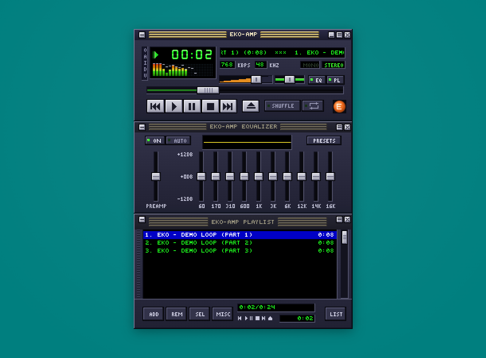
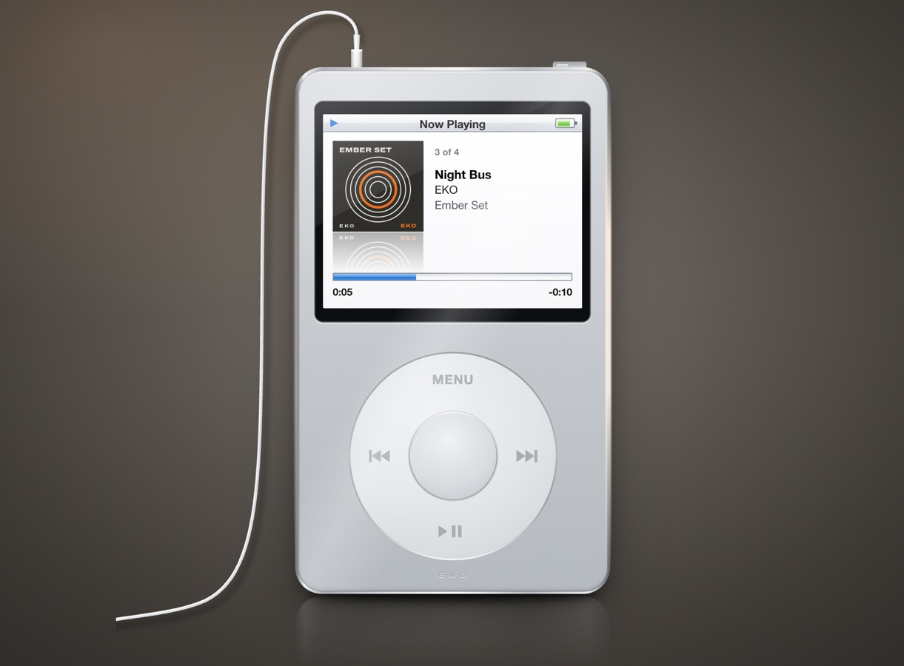
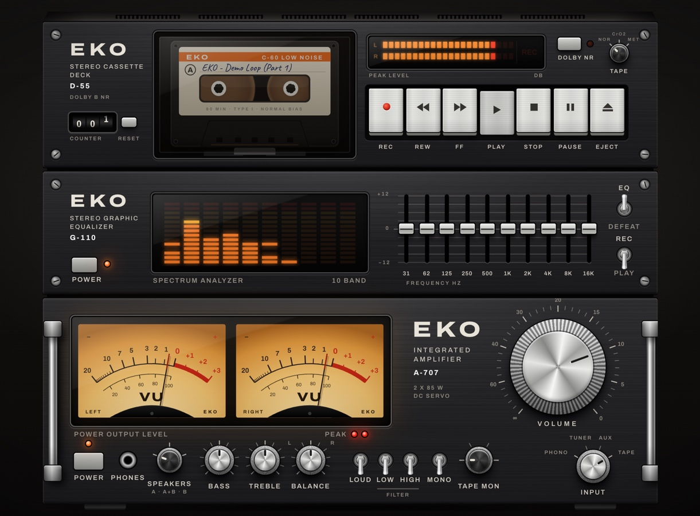
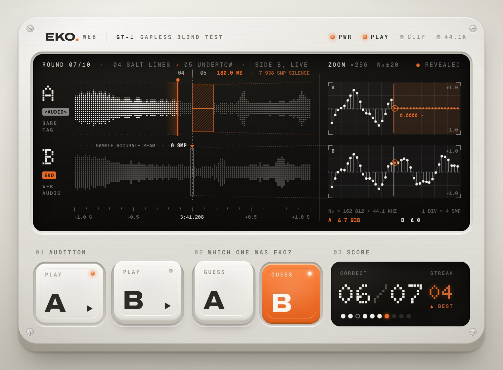
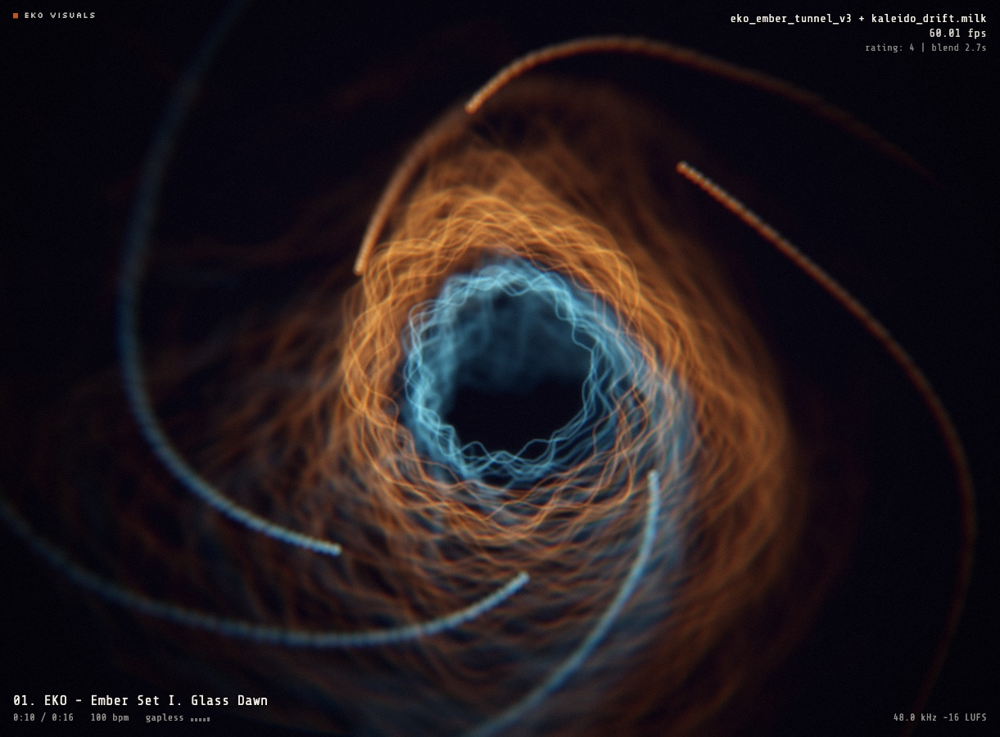
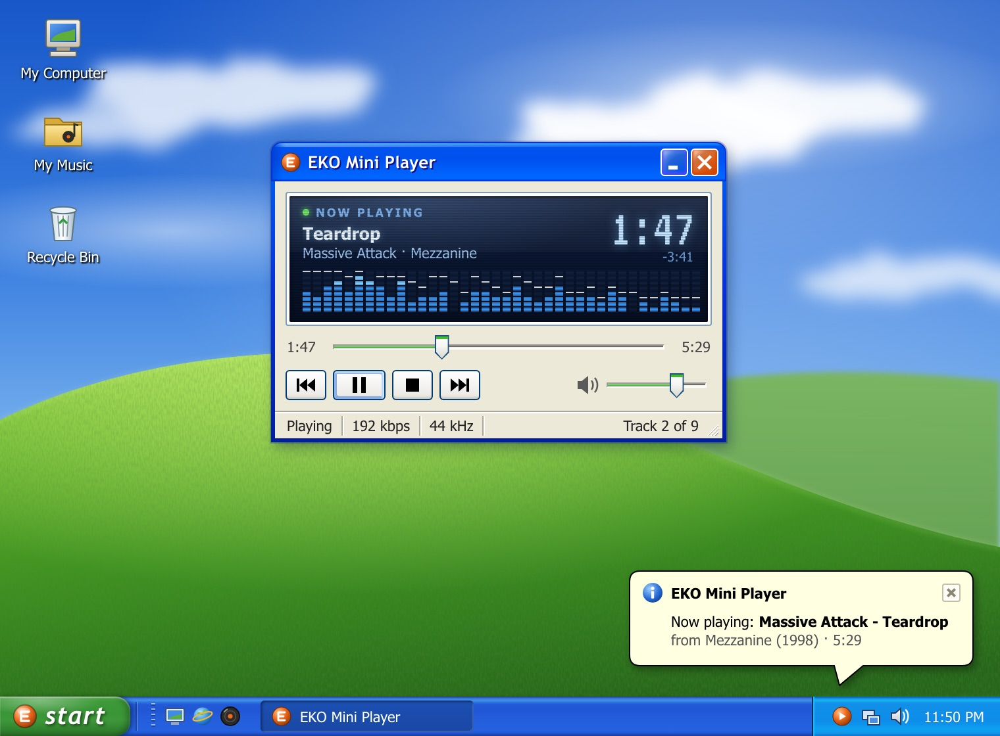

Each one is a full player built on @rpxl/eko-web: gapless playlists, loudness normalization and a live analyser, under a skin you'll recognise. Drop in your own files and listen to the seams.





